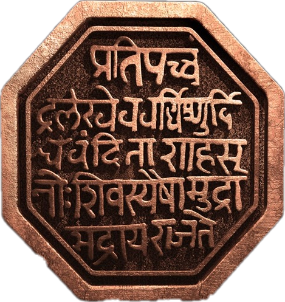

॥ जय भवानी — जय शिवाजी ॥
Chhatrapati · Lion of Maharashtra
1630 — 1680
— The Warrior King
Born on February 19, 1630, in the fort of Shivneri in the Pune district of Maharashtra, Chhatrapati Shivaji Maharaj rose from a regional chieftain to one of the greatest warrior kings the Indian subcontinent has ever known. The son of the Maratha general Shahaji Bhosle and the deeply devout Jijabai, he was raised on the heroic tales of the Mahabharata and Ramayana — tales that shaped his iron will and unyielding spirit.
Against the titanic forces of the Mughal Empire under Aurangzeb and the Adilshahi Sultanate of Bijapur, Shivaji carved out a sovereign Maratha kingdom through sheer brilliance — military genius, diplomatic cunning, and an unshakeable vision of Swarajya (self-rule). He is remembered not merely as a king, but as a civilisational force.
— Origins
Shivaji spent his childhood in Poona (Pune) under the guardianship of his mother Jijabai, who is credited as the architect of his character. A woman of extraordinary strength and devotion, she filled his mind with visions of a free Hindu kingdom. His tutor, Dadoji Kondadeo, provided him military and administrative training.
By the age of 15, Shivaji had already conquered his first fort — Torna Fort in 1645. By 16, he captured Raigad. These weren't the acts of a reckless youth but the first moves of a strategic mastermind, using the wealth hidden in Torna to fund further expansion.
"Of all the regrets of my life, the greatest is that I did not meet Shivaji."
— Mughal Emperor Aurangzeb, attributed
"Mountain Rat" — the name Mughal commanders used for Shivaji, grudgingly acknowledging his mastery of guerrilla warfare in the Sahyadri hills.
— Historical Records
— Chronicle
1630
Birth at Shivneri Fort
Born to Shahaji Bhosle and Jijabai at the fort of Shivneri, Junnar, Maharashtra. Named Shivaji after the local deity Shivai Devi.
1645
Capture of Torna Fort
At just 15, Shivaji captures Torna Fort from the Bijapur Sultanate — his first major military conquest and the symbolic beginning of Swarajya.
1659
Battle of Pratapgad — Slaying of Afzal Khan
The Bijapur general Afzal Khan is sent to destroy Shivaji. Shivaji outmaneuvers and kills him at a parley, scattering the entire Bijapur army. A legendary moment of cool-headed bravery.
1660
Battle of Pavan Khind — Baji Prabhu's Sacrifice
300 Maratha soldiers hold a mountain pass against 10,000 Bijapur forces so Shivaji can escape. Baji Prabhu Deshpande dies but ensures his king's survival — one of history's greatest last stands.
1666
Daring Escape from Agra
Imprisoned by Aurangzeb at Agra Fort, Shivaji engineers one of history's most audacious escapes — hiding in sweet-boxes, disappearing through Mughal territory, and returning triumphant to Maharashtra.
1670
Surat Looted Twice — Mughal Coffers Emptied
Shivaji raids Surat — the richest Mughal port — a second time, systematically transferring wealth that funds the expanding Maratha military machine.
1674
Coronation at Raigad — Chhatrapati
In a magnificent ceremony at Raigad Fort, Shivaji is crowned Chhatrapati (sovereign emperor). He formally establishes the Maratha Empire with an independent royal seal and administration.
1680
Mahaparinirvana
Chhatrapati Shivaji Maharaj passes away on April 3, 1680 at Raigad Fort at age 52. He left behind a kingdom, a navy, a code of governance, and a legend that has never dimmed.
— Warfare
Shivaji revolutionized Indian warfare. Outnumbered and outgunned, he refused to fight on his enemies' terms. He invented new strategies, built new institutions, and trained a force of ferocious loyalty.
Shivaji mastered hit-and-run tactics in the Sahyadri mountain ranges. Small, mobile units would strike supply lines, isolated garrisons, and encampments — then vanish into the hills before retaliation was possible.
Recognising that the Konkan coastline was Maharashtra's exposed flank, Shivaji built India's first organised indigenous navy around 1654. He commissioned warships, established coastal forts, and challenged the Portuguese and Siddi naval supremacy.
Shivaji understood that territory is held by whoever holds the high ground. He controlled over 350 forts — each a self-sustaining military base, granary, and refuge. His fort management system had no parallel in India.
Shivaji maintained an elaborate network of spies — the Harkara and Bahirji Naik's corps — that infiltrated Mughal courts, Bijapur Sultanate, and Portuguese settlements. He always knew more about his enemies than they knew of him.
Shivaji's code of conduct was remarkably enlightened. He prohibited soldiers from harming women, children, or civilians during raids. Mosques were respected. Women of all religions were to be protected — an exceptional standard for the era.
After the Pratapgad victory, Shivaji routed the Bijapur Sultanate's army of 10,000 at Kolhapur with just 5,000 cavalry — a masterclass in flanking maneuvers and psychological warfare that broke the Adilshahi's will to fight.
— The Stone Sentinels
Shivaji's fortresses were not merely military installations — they were symbols of Maratha sovereignty, architectural marvels carved into living rock, and the beating heart of Swarajya.
Raigad
Capital of the Maratha Empire · Site of Coronation · 2700 ft
Shivneri
Birthplace of Shivaji · Near Junnar, Pune · Sacred Site
Torna
First Conquest (1645) · Sahyadri Range · Symbol of Swarajya's Dawn
Sinhagad
Site of Tanaji Malusare's Sacrifice · Near Pune · Night Assault Legend
Pratapgad
Battle of Pratapgad · Afzal Khan's Defeat · Satara District
Vijaydurg
Naval Fort · Arabian Sea · Kankavali · Impenetrable Sea-Gate
Murud-Janjira
The Unconquered Sea Fort · Shivaji's Great Adversary · Never Taken
Panhala
Largest Fort · Site of Battle of Pavan Khind · Kolhapur District
— Administration
Shivaji created one of the most sophisticated governing systems of medieval India — the Ashta Pradhan Mandal, a council of eight ministers each responsible for a specific domain of governance. He replaced the Persian-dominated administrative language with Marathi and Sanskrit, creating the Rajyavyavahara Kosha — a new political vocabulary for an Indian kingdom.
Prime Minister. General administrator of the empire. First appointee: Moropant Trimbak Pingle.
Finance Minister. Managed revenue, treasury, and economic policy of the realm.
Commander-in-Chief. Led military campaigns and commanded the Maratha armies.
Royal chronicler and personal secretary. Maintained records and correspondence.
Minister of Foreign Affairs. Handled diplomacy, treaties, and foreign relations.
Chief Justice. Oversaw judicial matters and ensured fair, accessible justice for all citizens.
Minister of Religious Affairs. Managed religious ceremonies, endowments, and charitable trusts.
Revenue Minister. Managed land administration, taxation, and the ryotwari system.
— The Royal Seal

प्रतिपत् चंद्र लेख इव वर्धिष्णुः विश्ववन्दिता।
शाहसुनो शिवस्य एषा मुद्रा भद्राय राजते॥
"Like the crescent moon of the first day (of the bright fortnight), ever-growing and worshipped by the universe — this seal of Shiva, son of Shah, shines for the welfare of the people."
— Words of a King
"Freedom is a boon, which everyone has the right to receive."
— Chhatrapati Shivaji Maharaj
"Never bend your head, always hold it high."
— Chhatrapati Shivaji Maharaj
"Do not think of the enemy as weak, but do not overestimate their strength either. Know them as they are."
— Chhatrapati Shivaji Maharaj
"Even if there were a shop selling courage, I would have it purchased even by mortgaging this kingdom."
— Chhatrapati Shivaji Maharaj
"Of all the regrets of my life, the greatest is that I did not meet Shivaji."
— Emperor Aurangzeb (attributed)
— Lasting Impact
Shivaji Maharaj's legacy transcends the boundaries of Maharashtra. He proved that an indigenous power could challenge and defeat the largest empires of his era through strategy, courage, and incorruptible ideals. His model of governance — secular, just, and welfare-oriented — was centuries ahead of its time.
The Maratha Empire he founded eventually controlled nearly 2.8 million km² of the Indian subcontinent at its peak under the Peshwas — the largest empire in India during the 18th century. His legacy directly inspired Indian independence leaders; Bal Gangadhar Tilak revived his memory through the Shiv Jayanti festivals that galvanised millions against British rule.
Today, his equestrian statue stands at the entrance of the Arabian Sea in Mumbai — facing the ocean he once commanded with his warships. His name is chanted in Maharashtra's fields and cities alike: जय शिवाजी!